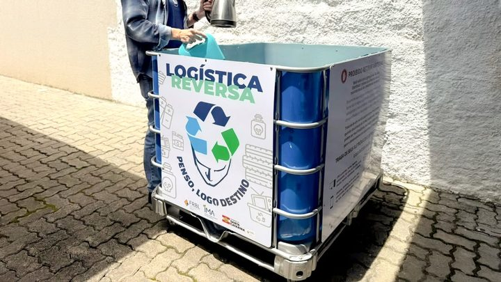

Itapema · Meio AmbienteItapema está instalando seis pontos de coleta de eletrônico, e a nota da Prefeitura desta quarta cita quatro
A outra ponta da reciclagem na região.
A Lei Municipal 3.817/2026 foi sancionada, publicada e entrou em vigor em 29 de outubro. Ela acrescenta dois artigos à lei de 2017 que cadastra os catadores da cidade. A multa é de 110 UFM-PB na primeira infração e 220 na reincidência. Pelo valor da UFM-PB de novembro, R$ 4,5938, isso dá R$ 505,32 e R$ 1.010,64, contas nossas. Quem regulariza a falta ali mesmo, na hora da fiscalização, não paga nada.
Em 30 segundos · Modo de Leitura, formato original Santa Informa
Porto Belo tem lei nova sobre catador de recicláveis.
É a Lei Municipal 3.817/2026.
Foi sancionada em 29 de outubro.
Publicada e em vigor no mesmo dia.
Ela mexe numa lei de 2017.
A Lei 2.545, de 12 de setembro daquele ano.
Essa lei cadastra quem cata na cidade.
A lei nova acrescenta dois artigos.
O 20-A e o 20-B.
O 20-A trata de identificação.
Crachá à vista, camiseta e placa no carrinho.
Faltando algum, é infração.
Mas dá para resolver na hora.
Se regularizar no local, não paga nada.
A ocorrência fica registrada.
Esse perdão vale uma vez por 12 meses.
Fora disso, a multa é de 110 UFM-PB.
Na primeira reincidência, 220 UFM-PB.
Na segunda, cassação do cadastro.
Por 12 meses, sem recadastrar.
A UFM-PB de novembro é R$ 4,5938.
110 UFM-PB dão R$ 505,32.
220 dão R$ 1.010,64.
As contas em reais são nossas.
Em outubro a UFM-PB está em R$ 4,5565.
A multa hoje sai por R$ 501,21.
O 20-B trata de quem não tem cadastro.
Na primeira vez, não leva multa.
Para a atividade e tira o carrinho de circulação.
O carrinho fica com a pessoa.
Só é apreendido se houver recusa.
Se repetir em 12 meses, aí vem a multa.
110 UFM-PB e apreensão do carrinho.
Tem uma proteção escrita na lei.
Se o município não entregou o crachá, não multa.
Vale também para reposição pedida e não atendida.
Faltar dois itens conta como uma infração só.
Não falamos com a Prefeitura de Porto Belo.
Poder PúblicoPublicada em Redação Santa Informa
![Ilustração com o rótulo Porto Belo, Costa Esmeralda, Lei 3.817/2026 e o título Porto Belo cria multa para o catador sem identificação. Quatro quadros de número trazem R$ 505,32 em vermelho para a multa da primeira infração, equivalente a 110 UFM-PB, R$ 1.010,64 em vermelho para a primeira reincidência, de 220 UFM-PB, 12 meses sem poder recadastrar na segunda reincidência e R$ 4,5938 como valor da UFM-PB em novembro de 2026. Abaixo, uma tabela chamada o que a lei nova manda fazer em cada situação, com seis linhas: sem crachá, camiseta ou placa, pode regularizar no local, sem multa; não regularizou ou já teve a chance, multa de 110 UFM-PB, R$ 505,32; primeira reincidência em 12 meses, multa de 220 UFM-PB, R$ 1.010,64; segunda reincidência, cassação do cadastro e da autorização por 12 meses; sem cadastro na primeira vez, para a atividade e recolhe o carrinho, sem multa; e sem cadastro de novo em 12 meses, multa de 110 UFM-PB e apreensão do carrinho. No rodapé, a frase sem multa em vermelho, dizendo que não há penalidade quando foi o próprio município que não entregou o crachá, a camiseta ou a placa.](imagens/webp/ilustracao-m349.webp)
O prefeito em exercício de Porto Belo, Ailto Neckel de Souza, sancionou a Lei Municipal nº 3.817 em 29 de outubro. Ela foi publicada no Diário Oficial dos Municípios no mesmo dia e entrou em vigor na data da publicação. O texto acrescenta os artigos 20-A e 20-B à Lei Municipal nº 2.545, de 12 de setembro de 2017, que é a lei que cadastra os catadores de material reciclável da cidade. São 3.334 dias entre uma lei e outra, conta nossa. Até agora aquele cadastro existia sem penalidade própria para a falta de identificação.
Pelo artigo 20-A, comete infração o catador cadastrado que trabalha sem o crachá à vista, sem a camiseta ou sem a placa de identificação afixada no carrinho, do jeito que os artigos 6º e 7º da lei de 2017 exigem. A fiscalização, quando for possível, dá a chance de resolver ali mesmo: se a pessoa colocar o item na hora, não há multa, e a ocorrência só é registrada. Esse benefício vale uma vez a cada 12 meses. Fora disso, a multa é de 110 UFM-PB, e sobe para 220 na primeira reincidência. Na segunda, o cadastro e a autorização são cassados por 12 meses. A lei também diz que não cabe penalidade quando foi o próprio município que não entregou o item, ou quando a reposição foi pedida e ainda não chegou, e que a falta de dois ou mais itens ao mesmo tempo conta como uma infração só.
O artigo 20-B cuida de quem cata sem estar cadastrado. Na primeira vez não há multa: a fiscalização manda parar a atividade, o próprio catador tira o carrinho de circulação e recebe a orientação de se cadastrar. O carrinho continua com ele, e só é apreendido se houver recusa em cumprir a ordem. Se a mesma falta aparecer de novo dentro de 12 meses, aí vêm a multa de 110 UFM-PB e a apreensão.
A lei fala em UFM-PB, a unidade fiscal do município, e não em reais. O valor dela muda todo mês por decreto. Em outubro, o Decreto 4.579 manteve a UFM-PB em R$ 4,5565, porque o IPCA de agosto tinha sido negativo. Em 28 de outubro, o Decreto 4.608 corrigiu o índice em 0,82%, pelo IPCA de setembro, e fixou a unidade em R$ 4,5938 para novembro. Com esses dois valores, a multa de 110 UFM-PB sai por R$ 501,21 até sexta-feira e por R$ 505,32 a partir de domingo. A de 220 vai a R$ 1.010,64. As contas são nossas.
O resumo de 30 segundos está no topo e a versão completa é o texto acima. Aqui ficam as três leituras da casa sobre o mesmo assunto.
Clara, a otimista
Tem bastante cuidado escrito nesse texto, e isso merece ser dito. A primeira falta de crachá não vira multa: a pessoa coloca o item ali mesmo e segue trabalhando. Quem está sem cadastro também não leva multa de cara, recebe orientação para se cadastrar. E o carrinho, que é a ferramenta de trabalho, continua com o dono, só saindo de circulação se houver recusa.
Tem outro ponto que passa batido e vale ouro: a lei diz que não há penalidade quando o crachá, a camiseta ou a placa não foram entregues pelo município, ou quando a reposição foi pedida e não chegou. Ou seja, a cobrança vale nos dois sentidos. E identificação, para quem cata, costuma abrir porta: condomínio que antes mandava embora passa a deixar entrar quando vê crachá e camiseta.
Seu Prudêncio, o criterioso
Merece atenção o tamanho do valor diante da atividade. R$ 505,32 na primeira multa e R$ 1.010,64 na reincidência são quantias altas para quem vive de vender material reciclável por quilo. A escada de penalidades ajuda, porque a multa só chega depois da chance de regularizar, mas convém acompanhar como ela cai na prática no primeiro ano.
O ponto que mais merece cuidado é a ponta do município. O parágrafo que livra da multa quem não recebeu o item só funciona se houver registro de entrega e de pedido de reposição. Sem controle escrito, a defesa vira palavra contra palavra, e quem perde é o lado que não tem papel. Vale acompanhar também se sai decreto dizendo qual órgão fiscaliza e como se recorre, porque a lei cita decisão administrativa definitiva sem descrever o caminho dela.
Uma sugestão útil: publicar, junto da regulamentação, quantos catadores estão cadastrados hoje e com que frequência o município repõe crachá e camiseta. São dois números simples que tornariam a regra mensurável. Dito isso, o texto foi bem construído. Ele separa quem está cadastrado de quem não está, dá chance antes de punir, evita somar penalidade sobre a mesma conduta e escreve a proteção para o caso de falha do município. É lei mais cuidadosa que a média nesse assunto.
Caco, o sarcástico
A multa não vem em reais, vem em UFM-PB. É a moeda própria de Porto Belo, que muda de valor todo mês por decreto e exige calculadora para a pessoa saber quanto vai pagar. Neste mês a unidade subiu 0,82%, então a mesma falta de crachá custa quatro reais a mais em novembro do que em outubro. Burocracia com correção monetária é o único serviço público que nunca atrasa.
O melhor detalhe é a regra dos dois itens. Se faltar crachá e camiseta ao mesmo tempo, conta como uma infração só. Alguém sentou e pensou nisso, o que é mais do que dá para dizer de muita lei por aí.
Reclamação registrada. Mas tá bom porque é progresso: agora está escrito em que caso multa, em que caso não multa e quanto é. Antes era tudo no artigo 20, que ninguém nunca leu, e cada fiscal resolvia do seu jeito.
Fontes: Os artigos 20-A e 20-B, a exigência de crachá, camiseta e placa, a chance de regularizar no local uma vez a cada 12 meses, as multas de 110 e 220 UFM-PB, a cassação do cadastro por 12 meses, a regra de quem não tem cadastro, a dispensa de penalidade quando o item não foi entregue pelo município e a contagem de dois itens como uma infração estão na Lei Municipal nº 3.817, de 29 de outubro de 2026, publicada pela Prefeitura de Porto Belo no Diário Oficial dos Municípios de Santa Catarina na mesma data. O valor de R$ 4,5938 para novembro e a correção de 0,82% pelo IPCA de setembro estão no Decreto nº 4.608, de 28 de outubro de 2026. O valor de R$ 4,5565 para outubro e a manutenção da unidade por causa do IPCA negativo de agosto estão no Decreto nº 4.579, de 30 de setembro de 2026. A conversão das multas em reais, a contagem de 3.334 dias entre as duas leis e a conta das cinco leis publicadas por Porto Belo em 29 de outubro saem da busca do Diário Oficial dos Municípios, que rodamos neste sábado por entidade e por período, e são conta nossa. A Lei Municipal nº 2.545, de 12 de setembro de 2017, não aparece nessa busca, e o que dizemos dela vem do texto da lei nova, que a cita. O site da Prefeitura de Porto Belo não respondeu às nossas leituras neste sábado, então não conferimos ali o número de catadores cadastrados. Não falamos com a Prefeitura de Porto Belo, com a Câmara de Vereadores nem com associação de catadores para esta matéria.

Itapema · Meio AmbienteA outra ponta da reciclagem na região.
 Itapema · Poder Público
Itapema · Poder PúblicoComo a cidade vizinha trata o descarte.
 Itapema · Meio Ambiente
Itapema · Meio AmbienteReciclagem que depende de quem recolhe.